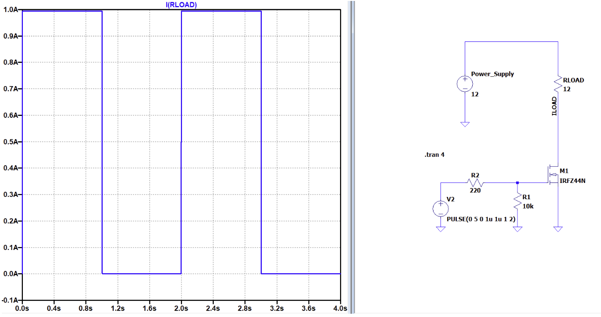
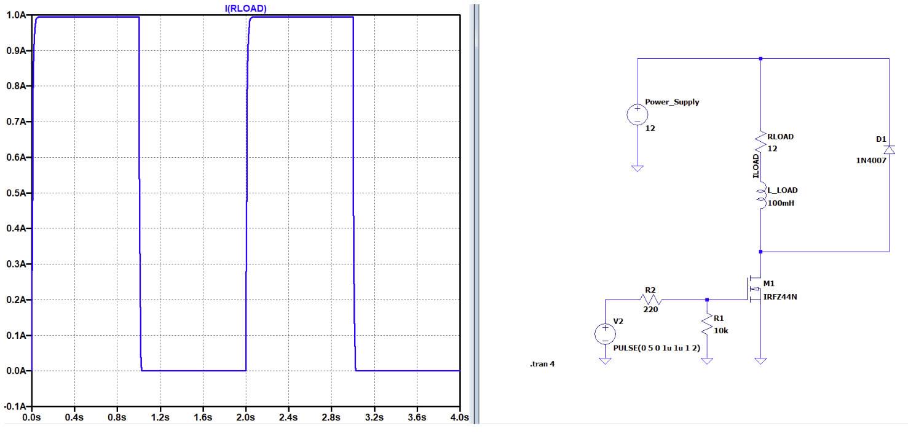
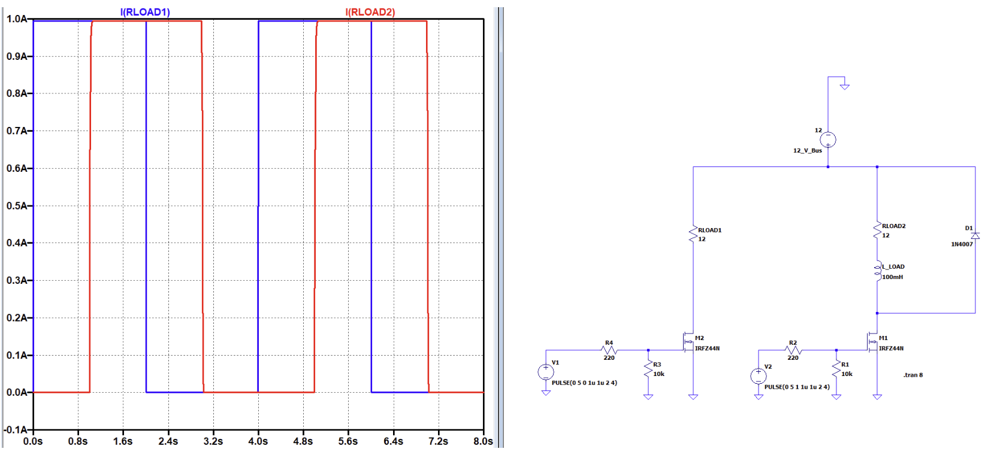
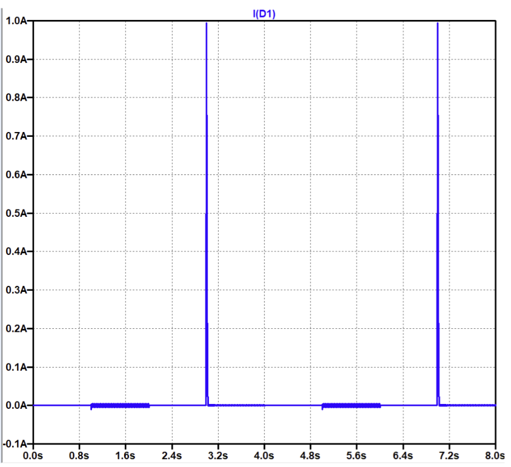

Project Timeline
Work Breakdown Structure and Gantt Chart


September 1st, 2026
We made progress on writing our CDP for the load shedding device for local microgrids. The website was published along with our headshots and bios. Started to form a schedule around when everyone can meet .
September 10th, 2026
A two load proof of concept would be a good start for our project.
Measurable requirements:
- System operates at 24 V DC source
- System controls 4-6 independent loads
- User can assign priority to each load
- System monitors source voltage and current
- System monitors current consumed by each load
- System automatically disconnects lower priority loads when power is insufficient
- System automatically restores loads when adequate power becomes available
- Higher priority loads shall be retained before lower priority loads
- Load state changes shall be indicated on the user interface
- System includes a physical emergency disconnect
- Controller prevents rapid switching caused by small power fluctuations
- Controller electronics operate from power derived from 24 V source
- Prototype remains within capstone budget
6 representative loads (all fall within 24V requirement):
1) Brushless PC fan - Represents ventilation, 2) LED light - Represents lighting, 3) PTC heating element - Represents space heating, water heating, and cooking appliances, 4) Submersible pump - Represents well water pump and agricultural uses, 5) Piezo buzzer - Represents communications and radio, 6) Peltier cooler - Represents refrigeration
Two potential ways to demonstrate:
1) Vary available power via potentiometer, 2) Vary requested power from loads
A decision to add an MPPT (maximum power point tracking) to the front end of our system was made, at the suggestion of Dr. Geiger.
Website with a good overview of MPPT's: https://www.unboundsolar.com/solar-information/mppt-article#how-many-mppts-do-you-need-dual-mppt-triple-mppt
September 15th, 2026
We started to look at components and their prices.
Arduino Mega 2560: https://a.co/d/07ClmSB7
DC supply -> buck-boost converter with duty ratio to simulate a changing voltage output from panel -> MPPT converts extra voltage into extra current -> monitor current to determine what loads to run. Need current meter somewhere
DC power supplies: https://a.co/d/0agCUX6S, https://a.co/d/0fz6EUjc
PC fan – 12 V, 330mA: https://a.co/d/02zIeUsZ
Heating element – 12 V, 4.2A to 416mA: https://a.co/d/0h6GTBjI
LED light strips – 12 V, 666mA: https://a.co/d/0itltvtM
Submersible pump 12 V, 750mA: https://a.co/d/0gA2A0rV
Piezo buzzer - 12 V, 10mA: https://a.co/d/0eSi3YmR
Peltier cooler - 5V, 2A: https://a.co/d/07HdkRYw
Power MOSFETs: https://a.co/d/05REQTxE
Current sensors: https://a.co/d/0g06oCtw
Fan and pump are inductive loads -> needs flyback diode
September 22nd, 2026
- A decision was made to add an additional killswitch, with one immediately after the power supply and one before the 12 V bus.
- A finalized block diagram was created for the project overview.
- Added flyback protection to block diagram.
- Built and simulated circuit with resistive load, shown in the first figure
- Built and simulated circuit with inductive load, including flyback diode protection, shown in the second figure


September 30th, 2026
Equation used to estimate the output voltage of a solar panel based on ambient temperature. IN CELCIUS
V_adjusted = V_at25 × [1 + (Temp_coefficient_of_panel / 100) × (Temp_of_cell - 25)]
We want to represent from 21.1 to 7.2 degrees Celsius (average temps for auburn in march)
V_at25=30 v, Temp_coefficient_of_panel=0.27%, Temp_of_cell[7.2, 21.1]
V_adjusted[30.316, 31.442]

The figure above shows the two load design circuit built in LTspice. The two separate pulses trigger at different times to show how each load is completely independent of the other, with current flowing in load 1 from 0 to 2 seconds, and current flowing in load 2 from 1 to 3 seconds. The flyback diode in the inductive load allows current to transfer back, giving it a safe path when the MOSFET turns off. The current measured in the diode can be seen in the figure below, showing the sharp 1 A spike flowing back safely when the MOSFET turns off at 3 seconds.
In the LTspice simulation, a IRFZ44N MOSFET is used as a placeholder, as it does not have the exact MOSFET we plan to use, which is the IRLZ44N.

How will the Arduino detect that the source has reached its available power limit? Monitor source voltage and current, then when the CC region is met, the voltage collapses and the Arduino sheds a load.
In order to prevent rapid load switching when near the threshold caused by small voltage fluctuations, the Arduino will use hysteresis and a time delay. A load will only be shed after the source voltage stays below a threshold for a specified time delay and it will not be restored until the voltage rises above a higher threshold.